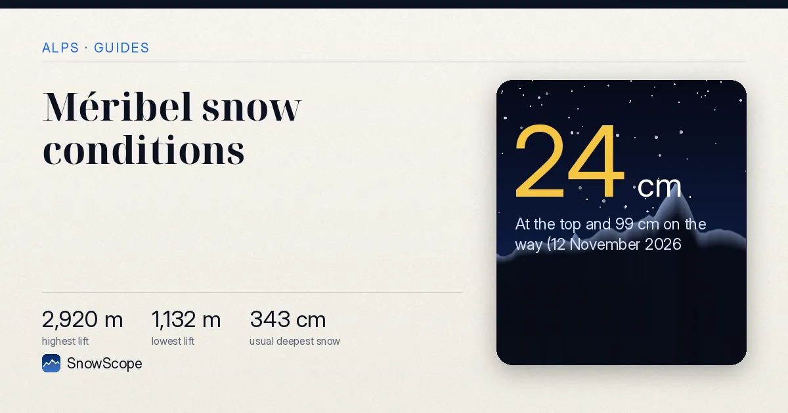
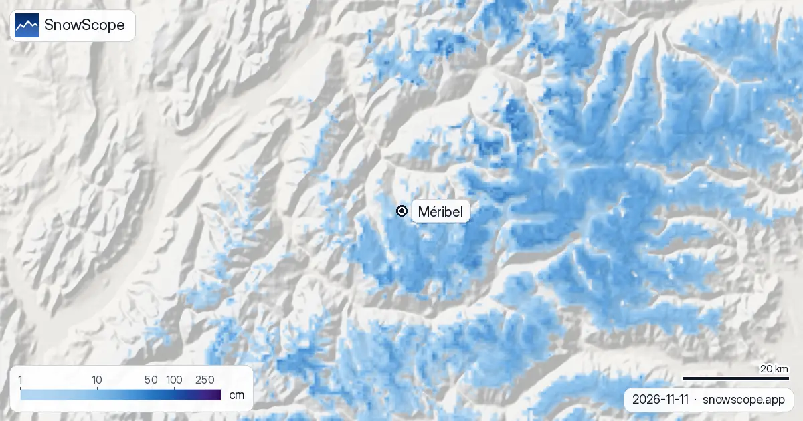

Méribel snow conditions: 24 cm at the top and 99 cm on the way (12 November 2026)
Méribel's first winter storm is arriving this week. The snapshot from 11 November shows the top at 2920 m holds 24 cm, mid-mountain at 2026 m has just 1 cm, and the base is bare—but the seven-day outlook changes everything: 99 cm is forecast at the top, 58 cm at mid-mountain, and even 3 cm in the valley.
See the live snow forecast for Méribel in the SnowScope appSnow depth, powder alerts and the 3D map, free.

What is on the mountain now
The high ridges around Saulire and Mont Vallon sit at 24 cm, the result of 18 cm that fell in the past week. These slopes connect Méribel to Courchevel and Val Thorens. Mid-mountain terrain, which feeds most runs down to Mottaret, has only 1 cm depth, though 7 cm arrived over the last seven days. The valley station is at zero.
Early-season numbers are thin enough that sun and bare ground still consume water from fresh snow. A north-facing combe will hold more than a sunny piste, and rocks may break through thin cover. These figures are estimates for the mapped area; exact depths vary by slope and aspect.

Seven days ahead: a major injection
Between now and 18 November, the forecast adds 99 cm at the top and 58 cm at mid-mountain. The first 24 hours alone bring 18 cm to the summit. If this falls as predicted, mid-mountain transforms from 1 cm to a usable base in one week, and the top will exceed what a typical November usually holds by mid-month.
Large forecasts carry uncertainty. The opening 48 hours are most reliable; beyond that, wind direction and local aspect become as important as the total. High winds on the ridges will scour and deposit snow unevenly.
How this week compares with past Novembers
Across 46 winters (1980–81 to 2025–26), Méribel's first snow reaches the top by 26 September, mid-mountain by 11 October, and the valley by 3 November. A typical November holds 4 cm in the village, 19 cm at mid-mountain and 62 cm at the summit. December builds to 20, 55 and 139 cm respectively.
Last winter (2025–26) peaked at 67 cm in the valley, 174 cm mid-mountain and 312 cm at the top. The median winter over all 46 seasons peaks at 54, 159 and 343 cm. If this week's forecast verifies, Méribel will move from well behind the seasonal curve to ahead of it in seven days.
Which elevations matter most now
For skiers planning a December trip, mid-mountain stability matters most. The usual December depth there is 55 cm, and 23 of the past 46 winters have reached 50 cm or more by then—a solid majority. The mapped terrain spans 142 km of runs across 46 lifts between 1132 m and 2920 m.
The deepest months at the top are March and April (267 and 297 cm respectively), but December at mid-mountain offers enough snow for most of the interconnected runs. Watch how the next week's storm distributes across elevations and aspects before committing a mid-season booking.
Timing and what to watch
The first 24 hours (18 cm at the top) are the most reliable part of the forecast. Beyond that, the week becomes more uncertain; storm tracks and wind patterns matter as much as raw totals. Warmer air aloft could reduce totals or bring rain at mid-mountain elevation.
The resort will announce its opening date and piste conditions once the storm settles. A 1 cm base, even after adding snow, is not skiable: foundation snow and grooming time are needed first.
Tips for skiers
- The first 24 hours brings 18 cm to the top—the surest part of the forecast. Wait for the resort's opening announcement before travelling.
- Mid-mountain snow on a thin early-season base will compress and settle quickly. Fresh snow depth shown here may not equal skiable depth for several days.
- High winds will move snow on the ridges into combes and gullies: north-facing terrain will be deeper than south-facing runs by the full forecast amount.
- Any off-piste plan during or after a storm week requires the current Météo-France avalanche bulletin (Bulletin d'estimation du risque d'avalanche).
- December usually reaches 55 cm at mid-mountain; this week's storm, if it verifies, sets up a solid base for the season to build on through winter.
About these numbers
Resort snow depths are the deepest snow on the resort's upper slopes on the date shown; they are estimates for an area, not a measurement at one point. Forecasts can change. Always read the official avalanche bulletin before going off-piste.
Official avalanche bulletins: Météo-France – Bulletin d'estimation du risque d'avalanche
Cite this report
For research, teaching or the press: the numbers and charts are free to reuse under CC BY 4.0 with this citation.
SnowScope (2026), Méribel snow conditions: 24 cm at the top and 99 cm on the way (12 November 2026), https://snowscope.app/blog/en/2026/11/meribel-snow-conditions-12-november-2026.html, accessed 2026-11-12
SnowScope (Atlas Labs). (2026, November 12). Méribel snow conditions: 24 cm at the top and 99 cm on the way (12 November 2026). SnowScope snow reports. https://snowscope.app/blog/en/2026/11/meribel-snow-conditions-12-november-2026.html
BibTeX
@misc{snowscope2026meribelsnowconditions12n,
author = {{SnowScope (Atlas Labs)}},
title = {Méribel snow conditions: 24 cm at the top and 99 cm on the way (12 November 2026)},
year = {2026},
month = nov,
howpublished = {\url{https://snowscope.app/blog/en/2026/11/meribel-snow-conditions-12-november-2026.html}},
note = {Published 2026-11-12 09:23 UTC; accessed 2026-11-12}
}· CC BY 4.0 · Methods, data and tools →
Méribel: snow and temperature by height, this winter vs last (tools) →
Follow Méribel
Free: a message when fresh snow is coming, and the forecast every morning.
More snow reports

Our 46-winter Alps record at 108 points from 667 to 3,872 m: snow days down at all of them, clearly at 81 %. What changed at each height, and why.

Saint François Longchamp sits at just 3 cm of snow, 12% of usual depth for this time, but 110 cm is forecast in the next two weeks.

Artesina got 44 cm of new snow in the last 72 hours. It now has about 20 cm on its upper slopes.